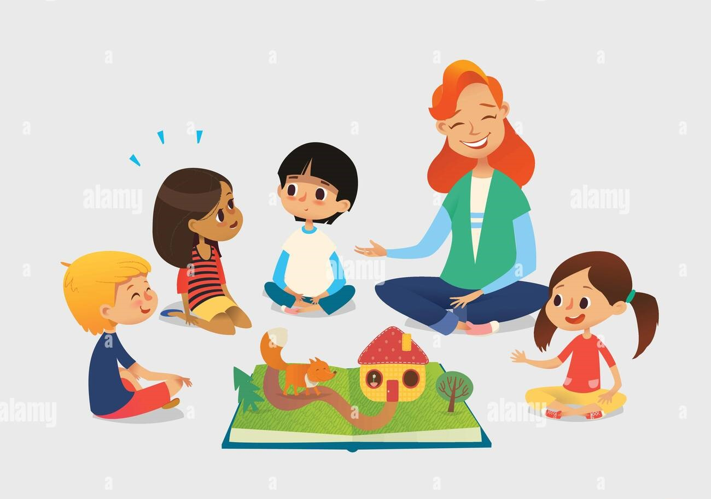

MI RECORRIDO POR LA ESCUELA
En el ambito escolar siempre fui una persona muy responsable y estudiosa, con muy buenas calificaciones consiguiendolas con esfuerzo
y dedicación
EDUCACIÓN PREESCOLAR
Esta etapa de mi vida transcurrió en Santa Fe desde mis 3 hasta mis 6 años en el Jardín de Infantes Nucleado N°275
"Lina Luisa Egli", ubicado en Humboldt. Allí transcurrieron mis mañanas delde las 08:00 am hasta las 12:00 pm, donde quede como
primer escolta de la bandera

EDUCACIÓN PRIMARIA
Esta etapa de mi vida comenzó en Humboldt, Santa Fe en la escuela Justo Jose de Urquiza, donde solamente hice
primer grado y mi horario escolar transcurría a la mañana desde las 08:00 am hasta las 13:00 pm.
Desde segundo hasta sexto lo continué en Villa Carlos Paz en la escuela Carlos Nicandro Paz, pero en el turno
tarde desde las 12:00 pm hasta las 18:00 pm. Finalice esta etapa en el año 2017 con mi viaje de egresados a San Clemente
EDUCACIÓN SECUNDARIA
Esta etapa de mi vida comenzó en el 2018 en el instituo secundario Remedios Escalada de San Martín (IRESM) en el turno
mañana, en tercer año me fui a la especialidad de Informática donde continuo en la actualidad ya que todavía no finalice
el secundario, lo hago a fines de este año (2023). Obtuve 2 logros muy importantes en todo el secundario que fueron estar en la bandera
como primera escolta y obtener en segundo año el diploma a mejor promedio.